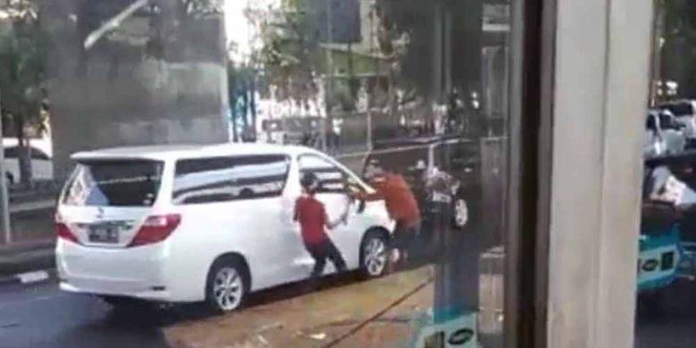

Sikap Benar Saat Menghadapi Aksi Kriminal di Jalan
ARIS F HARVENDA
KabarKabur.com - 27/09/2017, 10:01 WIB

Perampokan spion yang terjadi di Jakarta Barat.(Instagram - @koalisipejalankaki)
KabarKabur.com - Aksi kejahatan, perampokan dan pengerusakan mobil di jalan kerap terjadi. Paling sering adalah perampokan spion mobil-mobil mewah atau yang laris di pasaran. Saat mengalami kejadian itu, langkah dasar yang harus dilakukan tetap tenang dan jangan bertindak agresif.
“Langkah-langkah terbaik saat mengalami perampokan, contohnya spion, dalam kacamata defensive driving, dimulai dari tetap bersikap tenang. Perampasan spion biasanya cuma butuh waktu puluhan detik, lalu sang perampok melarikan diri,” kata Training Director Jakarta Defensive Driving Center (JDDC) Jusri Pulubuhu, beberapa waktu lalu.
Perampokan atau kejahatan biasanya dilakukan di lokasi jalan yang lalu lintasnya tidak lancar. Situasi itu bikin mobil korban tidak bisa ke mana-mana, maka pilihan terbaiknya adalah bertahan.
Selama hal itu terjadi, penumpang di dalam mobil, termasuk sopir, disarankan jangan melakukan tindakan agresif atau tiba-tiba. Sebagian besar mobil baru, dilengkapi asuransi. Jadi rasanya lebih baik rugi membayar klaim ke perusahaan asuransi daripada bersentuhan langsung dengan perampok.
Keselamatan
“Jangan bertindak spontan, misalnya turun atau yang lain-lain. Tetap cool down, melakukan pengidentifikasian. Kalau tidak aman, jangan melawan karena lebih baik rugi materi daripada keselamatan,” ucap Jusri.
Diingatkan Jusri, kejahatan seperti ini biasanya dilakukan berkelompok. Jadi, kemungkinan besar masih banyak komplotan penjahat yang tidak terlihat di sekitar mobil.
“Bagaimana kalau ada peluang tindakan ofensif? Kalau perlu tidak dilakukan, karena kalau si perampok cedera berat atau mati, ada payung hukum yang bisa memberatkan pelakunya,” ujar Jusri.
Ketimbang berpikir melakukan tindakan agresif, lebih baik pengemudi membunyikan klakson yang lama. Tujuannya untuk menarik perhatian sekitar agar banyak masyarakat yang terlibat dalam situasi.
penulis :Aris F Harvenda
Editor :Agung Kurniawan